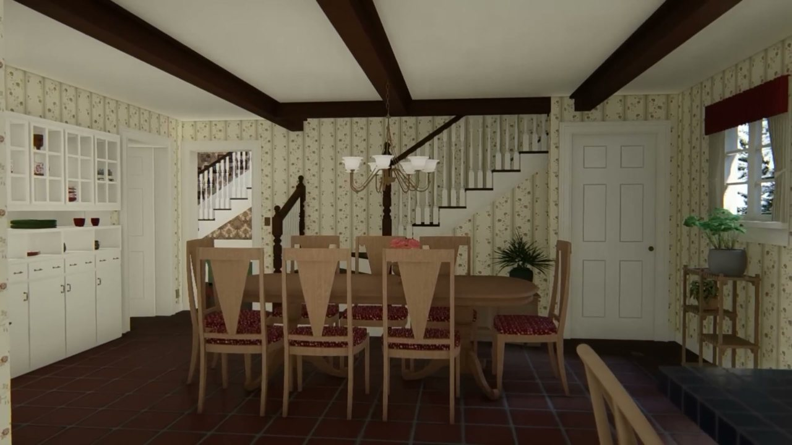
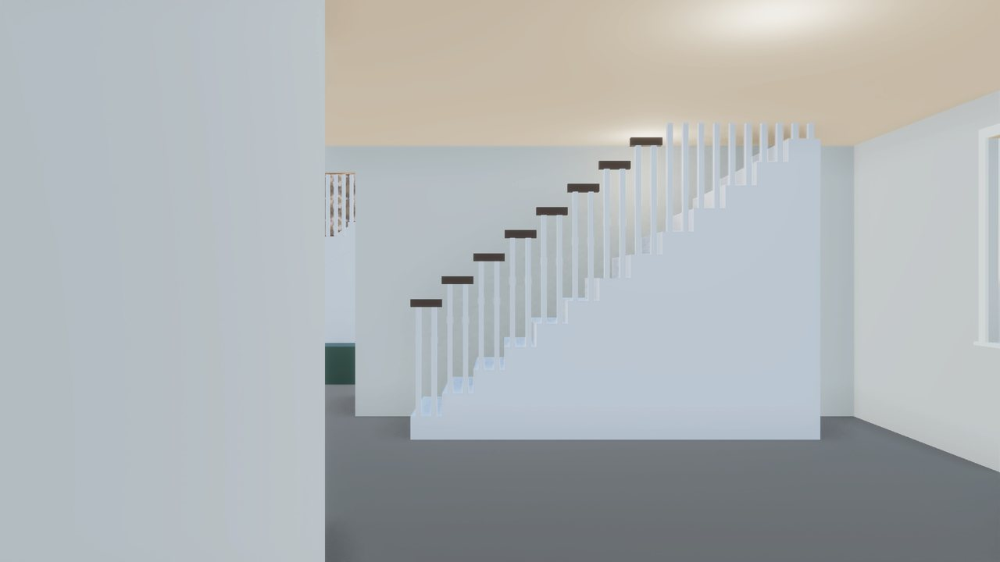
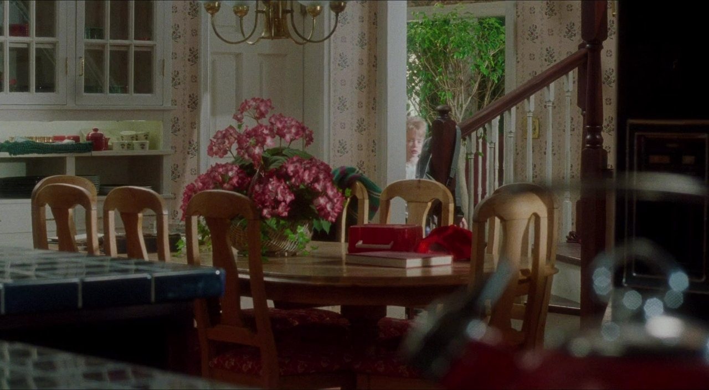
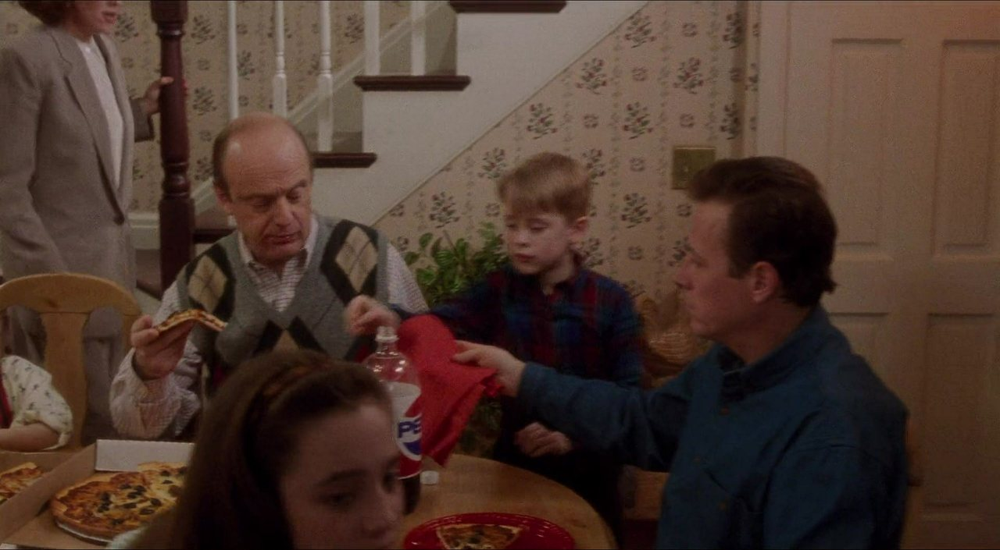
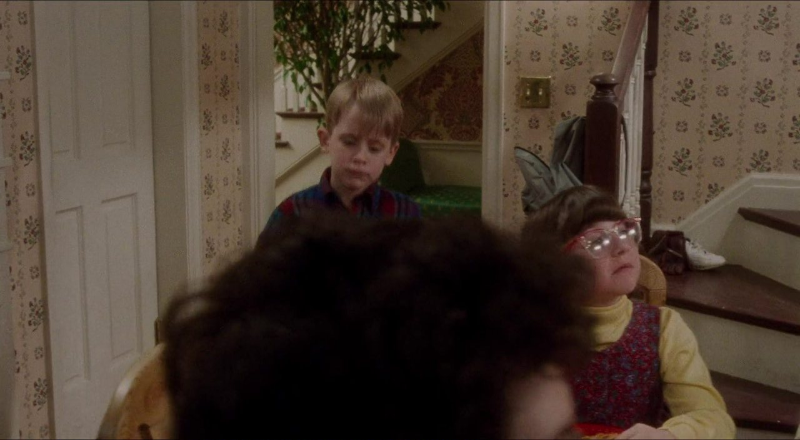
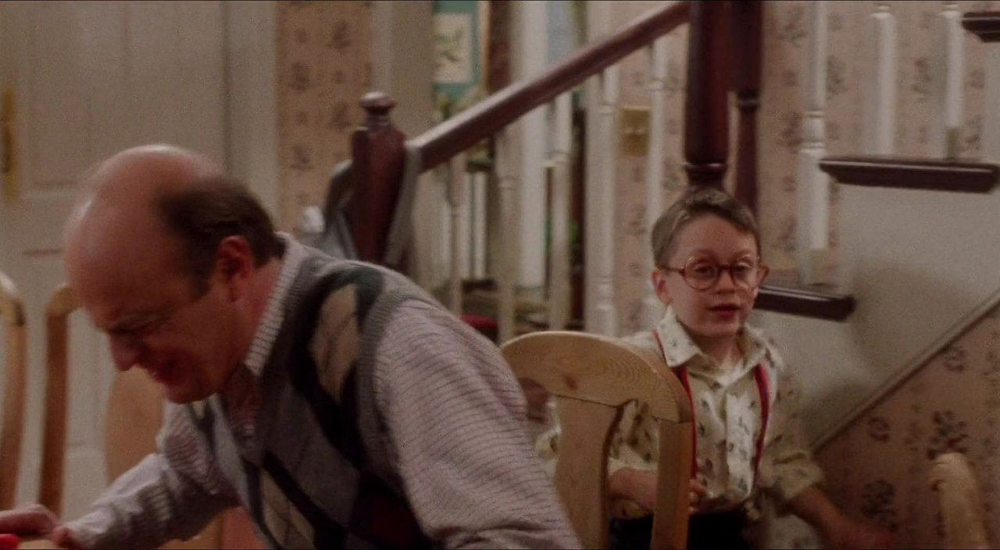
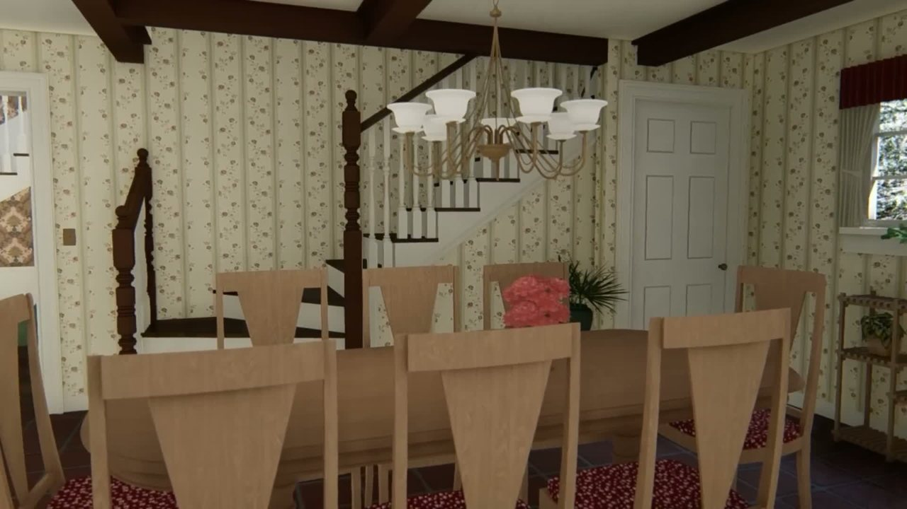
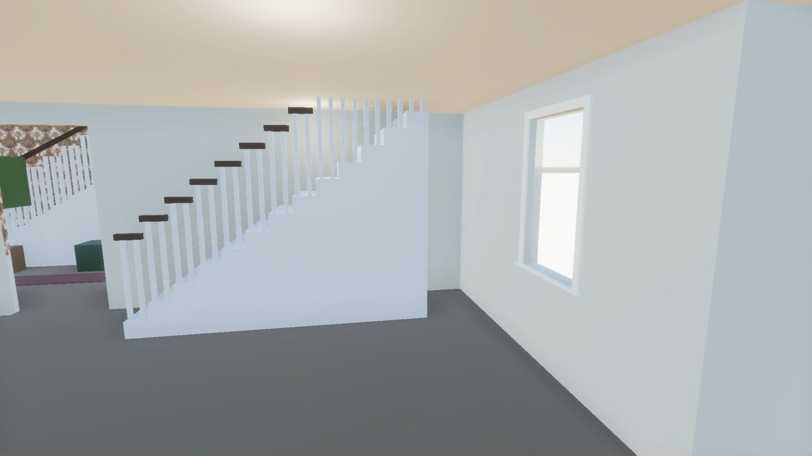
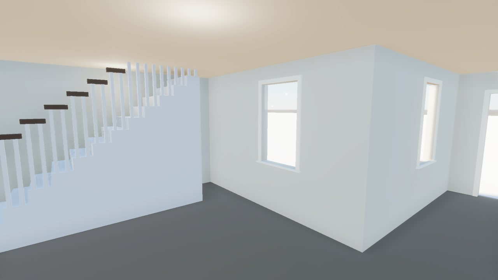

<title>Back Stair and Breakfast Room</title>
<meta name="claude:viewport-fit-sides" content="cover">
<link rel="stylesheet" href="https://fonts.googleapis.com/css2?family=Barlow+Condensed:wght@500;600&family=Barlow:wght@400;500;600&display=swap">
<style>
/* Layout: same contact-sheet language as the stair-hall page. Fade slider for the matched view, then film/tour stills beside our build, then the list of differences. */
:root { --paper: #eef1ef; --sheet: #fbfcfb; --ink: #1c2321; --muted: #5d6864; --rule: #cfd6d3; --bad: #b8432f; --accent: #2457c5;
  --display: "Barlow Condensed", "Arial Narrow", sans-serif; --body: "Barlow", system-ui, sans-serif; }
@media (prefers-color-scheme: dark) { :root:not([data-theme="light"]) { --paper: #111514; --sheet: #171c1b; --ink: #e2e8e5; --muted: #95a29d; --rule: #2c3533; --bad: #e07a63; --accent: #7aa2ff; color-scheme: dark } }
:root[data-theme="dark"] { --paper: #111514; --sheet: #171c1b; --ink: #e2e8e5; --muted: #95a29d; --rule: #2c3533; --bad: #e07a63; --accent: #7aa2ff; color-scheme: dark }
body { background: var(--paper); color: var(--ink); font: 16px/1.55 var(--body); padding-left: max(16px, env(safe-area-inset-left, 0px)); padding-right: max(16px, env(safe-area-inset-right, 0px)); padding-block: 20px 40px; }
main { max-width: 1100px; margin: 0 auto; display: grid; gap: 28px; }
h1 { font: 600 34px/1.1 var(--display); margin: 0; text-wrap: balance; }
h2 { font: 600 22px/1.2 var(--display); margin: 0 0 10px; letter-spacing: .01em; text-wrap: balance; }
p { margin: 0; max-width: 68ch; }
.lead { color: var(--muted); margin-top: 6px; }
.block { display: grid; gap: 10px; }
figure { margin: 0; background: var(--sheet); border: 1px solid var(--rule); border-radius: 3px; overflow: hidden; }
figure img { display: block; width: 100%; height: auto; max-width: 100%; }
figcaption { font-size: 13.5px; color: var(--muted); padding: 6px 10px 8px; }
figcaption b { color: var(--ink); font-weight: 600; }
.stack { position: relative; aspect-ratio: 16 / 9; max-width: 100%; background: #000; }
.stack img { position: absolute; inset: 0; width: 100%; height: 100%; object-fit: contain; }
.slider { display: flex; align-items: center; gap: 10px; padding: 8px 10px; font: 600 12px var(--display); letter-spacing: .08em; text-transform: uppercase; color: var(--muted); }
.slider input { flex: 1; min-width: 0; accent-color: var(--accent); }
.slider input:focus-visible { outline: 2px solid var(--accent); outline-offset: 2px; }
.pair { display: grid; grid-template-columns: 1fr 1fr; gap: 8px; }
@media (max-width: 700px) { .pair { grid-template-columns: 1fr; } }
.tag { font: 600 11px var(--display); letter-spacing: .08em; text-transform: uppercase; color: var(--muted); }
.diffs { display: grid; gap: 8px; }
.diffs div { background: var(--sheet); border: 1px solid var(--rule); border-left: 3px solid var(--bad); border-radius: 3px; padding: 8px 12px; max-width: 80ch; }
.diffs b { display: block; font-weight: 600; }
.diffs span { color: var(--muted); font-size: 14.5px; }
</style>

<main>
  <header>
    <h1>Back Stair and Breakfast Room</h1>
    <p class="lead">Your two walk notes in the breakfast area, against Marina's tour and the film. Nothing here has been rebuilt yet: this page is for agreeing what's wrong first. The kitchen search (room shape, the jutting corner, windows, cabinets) is still running and will be added.</p>
  </header>

  <section class="block">
    <h2>Marina's view from the kitchen</h2>
    <p class="tag">Drag to fade from her frame to our build</p>
    <figure>
      <div class="stack"></div>
      <label class="slider" for="m916">Marina <input id="m916" type="range" min="0" max="100" value="50"> Build</label>
      <figcaption><b>Marina 916 s.</b> Camera placed from the back wall's width, not solved, so expect some drift. The room's frame matches our plan: the foyer doorway at the left end of the back wall, the stair along it, the hutch wall on the left, the red-valance window on the right wall.</figcaption>
    </figure>
  </section>

  <section class="block">
    <h2>What the back stair really is</h2>
    <div class="pair">
      <figure><figcaption><b>Film 2528.</b> The foot by the foyer doorway: dark newel with Kevin's backpack, dark rail rising over white balusters to a taller turned post.</figcaption></figure>
      <figure><figcaption><b>Film 928.</b> The open side: dark treads, white risers, white cut stringer, and floral-papered wall below it. Not a solid block.</figcaption></figure>
      <figure><figcaption><b>Film 912.</b> The bottom steps face the table (into the room), between the newel and the tall post.</figcaption></figure>
      <figure><figcaption><b>Film 1044.</b> Square chamfered newel with a turned cap; turned white balusters on square blocks.</figcaption></figure>
      <figure><figcaption><b>Marina 933 s.</b> Same foot: short newel, bottom steps toward the table, the tall post, then the flight along the wall.</figcaption></figure>
    </div>
  </section>

  <section class="block">
    <h2>Our build at your note spots</h2>
    <div class="pair">
      <figure><figcaption><b>Your 4:26 note.</b> A solid white block with balusters standing on it.</figcaption></figure>
      <figure><figcaption><b>Your 4:49 note.</b> The outside corner of the kitchen's L juts into the room; bare walls.</figcaption></figure>
    </div>
  </section>

  <section class="block">
    <h2>What's wrong, as I read it</h2>
    <div class="diffs">
      <div><b>The stair's open side</b><span>Should be a white cut stringer with dark treads and white risers over a papered spandrel wall, not a solid white block.</span></div>
      <div><b>The stair's foot</b><span>Two or three bottom steps face the breakfast table between a short dark newel (by the foyer doorway) and a taller turned post, then a quarter turn into the flight along the wall. Ours starts straight at the doorway end.</span></div>
      <div><b>Missing basement door</b><span>A six-panel door with a brass switch on the back wall past the stair's high end (Kevin opens it in film 3607-3617).</span></div>
      <div><b>The left side of the room</b><span>In Marina's view the hutch wall runs toward the camera; ours closes that side with the wall around the laundry-chute pocket. Waiting on the kitchen search before deciding.</span></div>
      <div><b>Finishes and fittings</b><span>Small-floral wallpaper, dark ceiling beams, red tile floor, white hutch, the round table: none in the build yet.</span></div>
    </div>
  </section>
</main>

<script>
document.querySelectorAll(".slider input").forEach(function (r) {
  var top = r.closest("figure").querySelector(".top");
  function set() { top.style.opacity = r.value / 100; }
  r.addEventListener("input", set); set();
});
</script>
